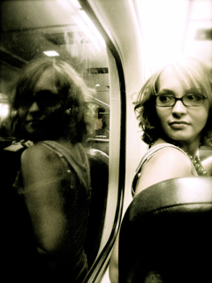

About Engaging Culture
There are many elements of society that have become inverted from God's original plan and intention for culture. This has produced despair and apathy, confusion and disparity, paralysis and idolatry.
The purpose of Engaging Culture is to pinpoint some of these areas; deepen our understanding of the complex issues; discuss, design, and react to that information; and then sustain the engagement when we return to our homes and universities.
The bulk of the weekend will revolve around three deliberate grids that dive into the core of culture.
- Engaging Urban Culture will discuss the causes and effects of poverty and racism in the inner-city and possible responses and solutions to those problems.
- Engaging Global Culture will give a broad view of issues and challenges that Jesus followers are being called to meet in our world with a specific focus on ministry to Muslims and immigrants.
- Engaging Pop Culture will explore the subtleties of how the arts, media, and public policy shape and distort our world view and discuss the art of living out the Gospel contextually.
